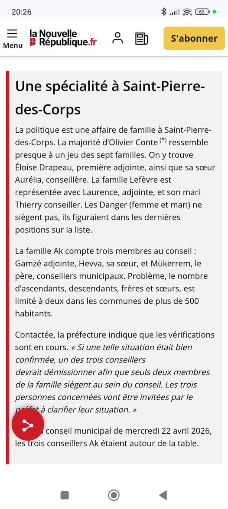

À Saint-Pierre-des-Corps, les miracles administratifs existent encore : certains élus disparaissent dans la presse… mais survivent sur le site de la mairie. On croyait pourtant que seuls les saints connaissaient la résurrection.

Après les révélations publiées par VESEMT (ici et sur son Facebook) dès le 3 mars 2026, concernant la très familiale composition de la liste Saint-Pierre Autrement (SPA,) rebaptisée par nous « Dynastie Conte ». Une sorte de « Conseil municipal en kit familial », entre cousins politiques et héritages de fauteuils républicains. La NR 37 du 24 avril 2026 évoquait le retrait contraint d’un des 3 XX dans un billet dont le titre peu flatteur : « Une spécialité à Saint-Pierre-des-Corps» appelait une réaction démocratique immédiate de la Majorité Municipale.Or, surprise : Un mois après, le site officiel de la ville continue d’afficher tranquillement trois XX au Conseil municipal. Comme les Rois mages, mais avec davantage de délégations.
Alors évidemment, on nous expliquera qu’il faut attendre le prochain Conseil municipal de juin. Car à Saint-Pierre-des-Corps, un élu peut cesser d’exister juridiquement tout en poursuivant une brillante carrière numérique. C’est le principe de la démocratie quantique : l’élu est à la fois parti et encore présent tant que personne n’actualise la page internet.
On connaissait :
-
le mandat impératif,
-
le mandat représentatif,
-
voici désormais le mandat fantomatique.
Pourtant, mettre à jour un site internet ne nécessite ni vote solennel, ni consultation populaire, ni conclave préfectoral. Un simple clic suffit. Même Louis XIV, qui administrait pourtant son royaume avec des plumes d’oie, mettait moins de temps à modifier la composition de sa cour.
À ce rythme-là, les archives municipales annonceront encore en 2032 que certains élus siègent “actuellement”.
Le problème n’est d’ailleurs pas esthétique. Il est démocratique. Les habitants ont le droit de savoir qui siège réellement, qui vote réellement et qui représente réellement la commune. Ou alors il faut assumer jusqu’au bout et rebaptiser le site officiel :« Saint-Pierre-des-Corps – Saison 2026 : Game of Trônes municipaux ».
Chez VESEMT, nous pensions naïvement qu’une République locale devait distinguer l’état civil de l’état spectral.
Manifestement, à SPA, même les fantômes ont une indemnité de fonction.
Le 23 mai /2026.
Le Comité Populaire et néanmoins bienveillant de Vivre (surtout) Ensemble et (si possible) Solidaires en Métropole Tourangelle
Commentaires